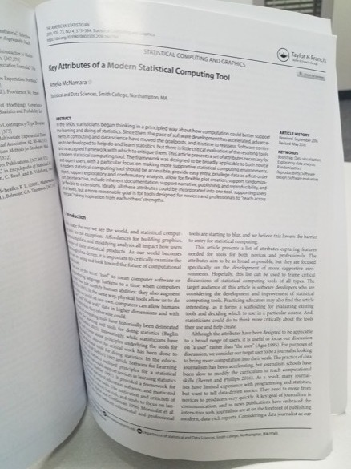

Key Attributes of a Modern Statistical Computing Tool
Amelia McNamara ![]()
A few weeks ago, I tweeted that the first paper to come out of my dissertation was published. I got my PhD in 2015, and it’s now 2019. That means I’ve been thinking about this work for more than four years (in fact, it’s probably closer to seven!).
If you want to read the paper, it’s now published in Volume 73, Issue 4 of The American Statistician. I was given 100 free e-prints, which are available until they run out here. A pre-print of this paper is also available on the arXiv if you want a non-paywalled version.
I am so delighted to finally have this thing I have been thinking about since 2012 finally off my mental list and into the real world!

Some of the story of how this paper came to be is written into my dissertation, but I thought I would summarize it briefly here.
Essentially, as a graduate student I had the opportunity to run some professional development (PD) for high school teachers to help them develop their R skills. The PD was about a week long, and it was for the Exploring Computer Science (ECS) curriculum. Over the course of the week, I managed to prove myself to the PIs of the grant (particularly Jane Margolis) because of my ability to communicate with both technical folks and tech-phobic people. The ECS team immediately found some hours for me to continue work with them, and then I was quickly incorporated into the next grant the team developed– Mobilize. The Mobilize project had some big goals, including developing data science technology and curriculum for the high school level, running PD, research and evaluation of our products, changing educational policy at the national and state level, and more.
Over the course of the next three years, I ran hundreds of hours of professional development for teachers, mostly teaching them technical skills to support data science curriculum, but also some basic statistical concepts. This was extremely difficult task, because many teachers had never taken a statistics course (or if they had, it was years before), or programmed in any language. Over the course of the grant, we iterated on a number of tools. In order, we tried:
- base R, with the standard R GUI
- Deducer
- formula syntax R, through an RStudio server
The experience of iterating through tools and attempting to teach them to novices gave me a lot of perspective on what makes a good tool for someone who is just starting out. Since then, I’ve taught R in many other contexts (in undergraduate college courses, at conference workshops for biostatisticians, data journalists, and generally for data practitioners).
In parallel to my experience starting to teach R and other technical tools, as a graduate student I had the time and opportunity to read hundreds of papers. This allowed me to think deeply about concepts from human-computer interaction, user experience design, and programming language design, and how these concepts interact with ideas of statistical computing. If you look at the references of my recent paper, I think it’s clear this paper came from a dissertation, because it has almost 100 references. The two most influential pieces to my dissertation (and this derived work) were
- The Technical Tools of Statistics, by John Tukey (1965)
- Software for Learning and for Doing Statistics, by Rolf Biehler (1997)
Both of these papers lay out idealized attributes of statistical tools, and by clearly articulating the way tools should work in the future, they were able to manifest that future. (As Alan Kay says, “the best way to predict the future is to create it.”)
In Tukey’s case, his paper clearly influenced his own software work (e.g., prim9, a tool for visualizing high-dimensional data from the 1970s, which you interacted with using a light pen), as well as tools like S, S-Plus, and R.
Biehler’s paper laid the groundwork for TinkerPlots and Fathom, two tools for teaching statistics that allowed learners to directly interact with their data and build intuition about statistics. Sadly, both TinkerPlots and Fathom are now mostly defunct, although The Concord Consortium is working on a next-generation tool called CODAP, the Common Online Data Analysis Platform (full disclosure, I have consulted with The Concord Consortium).
I found these papers influential, and I saw an opportunity to reconsider the necessary components for statistical software again. Nearly 20 years had passed since Biehler’s paper, and advances in computer graphics and software in general have made more things possible. Working from the inspiration of Tukey and Biehler, and guided by my on-the-ground experience teaching R as well as my extensive literature review, I developed a list of ten attributes I think are necessary for a modern statistical computing tool. These are:
- Accessibility
- Easy entry for novice users
- Data as a first-order persistent object
- Support for a cycle of exploratory and confirmatory analysis
- Flexible plot creation
- Support for randomization throughout
- Interactivity at every level
- Inherent documentation
- Simple support for narrative, publishing, and reproducibility
- Flexibility to build extensions
As a tl;dr, I’ll summarize those for you here.
- Accessibility: The tool should be accessible to lots of people. It needs to work on all major operating systems, be free or cheap, and be accessible to people with disabilities.
- Easy entry for novice users: The tool should be easy to get started using, with little or no guidance. The “threshold” to success should be low.
- Data as a first-order persistent object: Data should be the foundational object for a statistical tool. When you work with data, it should always be as a copy (looking at you, Excel).
- Support for a cycle of exploratory and confirmatory analysis: It should be easy to iterate through the “data cycle” in the tool.
- Flexible plot creation: Statistical tools should allow you to create new visualization types, following the Grammar of Graphics.
- Support for randomization throughout: As a pedagogical tool and a more flexible method for inference, it is important a tool support simulation methods like randomization and the bootstrap, both for numerical statistics and for graphics.
- Interactivity at every level: An analyst should find it easy to adjust parameters as they work and see the effects of parameters early in their analysis on later pieces of the analysis. Published results should be interactive to allow readers to do the same.
- Inherent documentation: The tool should tell (or show) you what it is going to do. Textual languages should aim for function names that are as human-readable as possible, and graphical user interfaces should strive to visualize what is happening in each step.
- Simple support for narrative, publishing, and reproducibility: Whatever you do in your tool should be easily documented, whether as a static document with textual code or a list of operations in a GUI. Narrative and analysis should be encouraged to mix in literate documents.
- Flexibility to build extensions: The complement to 2), the tool needs a high ceiling, so you don’t “experience out” of the tool. It should be possible to implement new functions and extend functionality.
I think these attributes encompass a lot of what is important for a tool. Over the years I’ve been thinking about this, I’ve refined the attributes and tried to make them as comprehensive as possible. But, I’m sure there are pieces that are missing. For example, it has been pointed out that I don’t talk about the correctness of the implementations. To me, that goes without saying– if it’s a tool for statistical computing, it needs to do statistics properly! But of course, we have seen that isn’t always a safe assumption. I explicitly didn’t touch things like computing speed, because I was considering this from a human usability perspective. If you have a good, usable tool, and it allows you to build extensions, someone will fix the speed issue. Much harder to fix are things like inherent documentation, which we have seen Hadley Wickham working through with things like pivot_longer(), the next generation of what was formerly gather(), formerly cast().
My goal with writing this paper was to give practitioners and educators a framework for evaluating a tool, and to inspire people who build tools themselves. I hadn’t seen anything like this since 1997, so I decided it was time to re-open the conversation. But, I do want it to be a conversation. What else should we be aiming for as we design the next iteration of statistical computing tools?